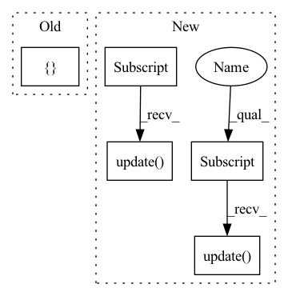

Pattern ID :3042

Before Change
]
bboxes = torch.cat(
[
torch.cat([torch.tensor([idx]), roi_row])
for idx, roi in enumerate(bboxes)
for roi_row in roi
]
After Change
empty_entries = self._get_empty_entries(detections)
if len(empty_entries) == len(detections):
for idx, _ in enumerate(detections):
detections[idx].update(
{key: [] for key in ["min_row", "min_col", "scale_h", "scale_w"]}
)
return detections
bboxes = [
item["boxes"]
for idx, item in enumerate(detections)
if idx not in empty_entries
]
bboxes = torch.cat(
[
torch.column_stack([idx * torch.ones(bbox.shape[0]), bbox])
for idx, bbox in enumerate(bboxes)
]
) // num_rois, 5
polygonrnn_output = self.polygonrnn_model.test(
x, bboxes, self.val_seq_len
) // type: ignore
min_bound = 0
for idx, det in enumerate(detections):
if idx in empty_entries:
detections[idx].update(
{key: [] for key in ["min_row", "min_col", "scale_h", "scale_w"]}
)
continue
n_items = len(det["boxes"])
detections[idx].update(
{
In pattern: SUPERPATTERN
Frequency: 3
Non-data size: 5
Instances
Fragment ID: 10031209
Project Name: phborba/pytorch_segmentation_models_trainer
Commit Name: e46df78f6ad1ae19339f4c0e3e32c5c755cc070a
Time: 2021-11-25
Author: philipeborba@gmail.com
File Name: pytorch_segmentation_models_trainer/custom_models/mod_polymapper/modpolymapper.py
M Class Name: GenericModPolyMapper
N Class Name: GenericModPolyMapper
M Method Name: forward(3)
N Method Name: forward(3)
M Parent Class: nn.Module
N Parent Class: nn.Module
M File Name: pytorch_segmentation_models_trainer/custom_models/mod_polymapper/modpolymapper.py
N File Name: pytorch_segmentation_models_trainer/custom_models/mod_polymapper/modpolymapper.py
M Start Line: 393
M End Line: 395
N Start Line: 378
N End Line: 412
'>
Before Change
emb = self.segment_head(x)
if self.use_softmax:
pred = self.classifier(emb)
return {"pred": pred}
else:
emb = self.fc(emb)
return {"emb": emb}
After Change
self.use_softmax = args.use_softmax
def forward(self, x):
dict_outputs = {}
emb = self.segment_head(x)
if self.use_img_inp or self.use_visual_acuity:
img_inp = self.fc_img_inp(emb)
dict_outputs.update({"img_inp": img_inp})
if self.use_softmax:
pred = self.classifier(emb)
dict_outputs.update({"pred": pred})
else:
emb = self.fc(emb)
dict_outputs.update({"emb": emb})
return dict_outputs
def _init_weight(self):
for m in self.modules():
'>
Fragment ID: 10031208
Project Name: noelshin/pixelpick
Commit Name: 0a7e51c1131e51d19bc5a92b43f6d2248e666e54
Time: 2021-01-14
Author: gyungin@robots.ox.ac.uk
File Name: segmentation/networks/decoders.py
M Class Name: SegmentHead
N Class Name: SegmentHead
M Method Name: forward(2)
N Method Name: forward(2)
M Parent Class: nn.Module
N Parent Class: nn.Module
M File Name: segmentation/networks/decoders.py
N File Name: segmentation/networks/decoders.py
M Start Line: 135
M End Line: 139
N Start Line: 136
N End Line: 149
'>
Before Change
images, targets = self.transform(images, targets)
features = self.backbone(images.tensors)
if isinstance(features, torch.Tensor):
features = OrderedDict([(0, features)])
proposals= self.rpn(images, features, targets)
// Alex: RoI layer returns only detections
After Change
detections, detector_losses = self.roi_heads(features, proposals, images.image_sizes, targets)
detections = self.transform.postprocess(detections, images.image_sizes, original_image_sizes)
losses = {}
losses.update(detector_losses)
losses.update(proposal_losses)
if self.training:
return losses
'>
Fragment ID: 10031210
Project Name: alexts1980/covid-ct-mask-net
Commit Name: 02dc8b837503ec73aea3b9e2db35669c9cccff6f
Time: 2020-11-01
Author: ater1980@gmail.com
File Name: models/mask_net/generalized_rcnn.py
M Class Name: GeneralizedRCNN
N Class Name: GeneralizedRCNN
M Method Name: forward(3)
N Method Name: forward(3)
M Parent Class: nn.Module
N Parent Class: nn.Module
M File Name: models/mask_net/generalized_rcnn.py
N File Name: models/mask_net/generalized_rcnn.py
M Start Line: 49
M End Line: 60
N Start Line: 48
N End Line: 72
'>
Before Change
]
bboxes = torch.cat(
[
torch.cat([torch.tensor([idx]), roi_row])
for idx, roi in enumerate(bboxes)
for roi_row in roi
]
After Change
)
losses.update(polygonrnn_loss)
return losses, acc
detections = self.obj_detection_model(x)
empty_entries = self._get_empty_entries(detections)
if len(empty_entries) == len(detections):
for idx, _ in enumerate(detections):
detections[idx].update(
{key: [] for key in ["min_row", "min_col", "scale_h", "scale_w"]}
)
return detections
bboxes = [
item["boxes"]
for idx, item in enumerate(detections)
if idx not in empty_entries
]
bboxes = torch.cat(
[
torch.column_stack([idx * torch.ones(bbox.shape[0]), bbox])
for idx, bbox in enumerate(bboxes)
]
) // num_rois, 5
polygonrnn_output = self.polygonrnn_model.test(
x, bboxes, self.val_seq_len
) // type: ignore
min_bound = 0
for idx, det in enumerate(detections):
if idx in empty_entries:
detections[idx].update(
{key: [] for key in ["min_row", "min_col", "scale_h", "scale_w"]}
)
continue
n_items = len(det["boxes"])
detections[idx].update(
{
'>
Fragment ID: 10031217
Project Name: phborba/pytorch_segmentation_models_trainer
Commit Name: e46df78f6ad1ae19339f4c0e3e32c5c755cc070a
Time: 2021-11-25
Author: philipeborba@gmail.com
File Name: pytorch_segmentation_models_trainer/custom_models/mod_polymapper/modpolymapper.py
M Class Name: GenericModPolyMapper
N Class Name: GenericModPolyMapper
M Method Name: forward(3)
N Method Name: forward(3)
M Parent Class: nn.Module
N Parent Class: nn.Module
M File Name: pytorch_segmentation_models_trainer/custom_models/mod_polymapper/modpolymapper.py
N File Name: pytorch_segmentation_models_trainer/custom_models/mod_polymapper/modpolymapper.py
M Start Line: 393
M End Line: 395
N Start Line: 378
N End Line: 412